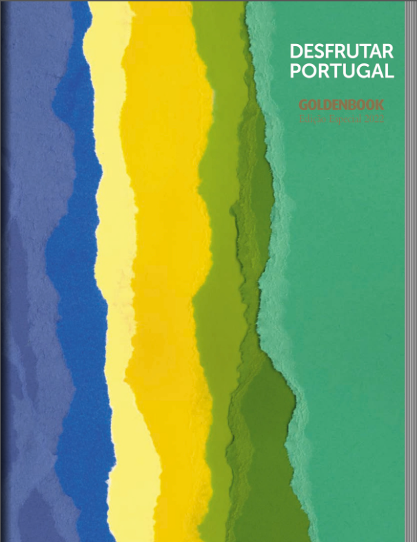
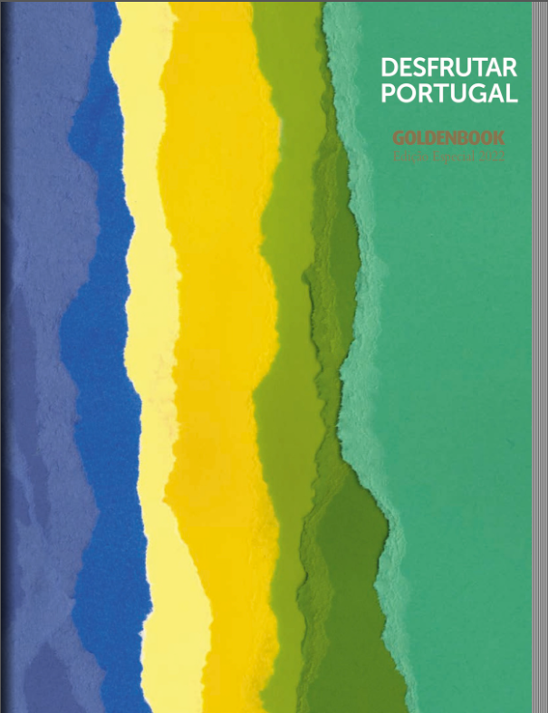

Desfrutar Portugal (2022)
Se não se sente saciado com o que viu até agora, aqui temos das páginas 24 à 29 deste eBook, mais informações sumarentas.
Apresentamos uma tabela que representa alguns dados estatísticos sobre a cidade de almada, com o link da sua camâra municipal disponível, adicionámos ainda algumas Curiosidades!
| Demografia | |
|---|---|
| População | 88.202 habitantes |
| Densidade populacional | 6.309 habitantes por km² |
| Geografia | |
| Área | 13,98 km² |
| Distrito | Setúbal |
| País | Portugal |
| Website Oficial | |
| www.cm-almada.pt | |
Se não se sente saciado com o que viu até agora, aqui temos das páginas 24 à 29 deste eBook, mais informações sumarentas.
